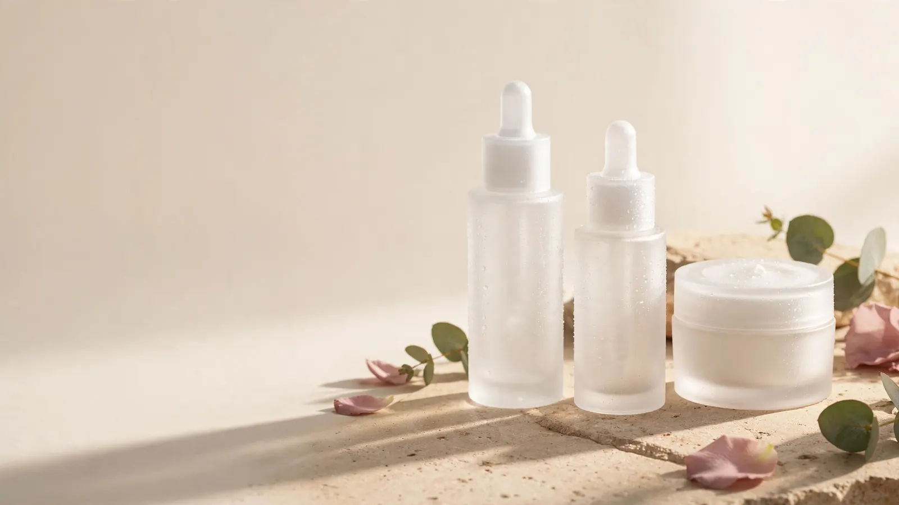
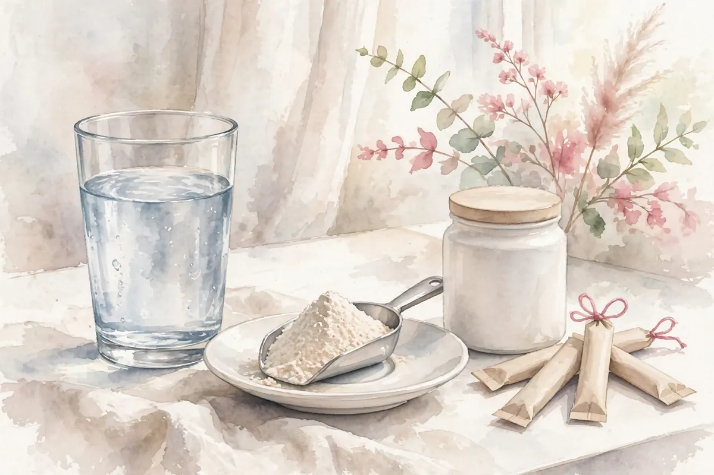
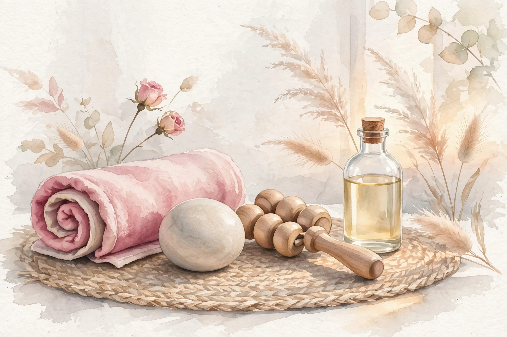

スキンケア手順を見直すチェックリスト
手順・量・順番を項目で点検し、変えるのは一度に1つだけという見直し方です。
THE BEAUTY TOOLBOX
スキンケア、サプリ、ヘアケア、ボディケア。買う前に知りたい「量」と「表示」の読み方を、記事で案内します。

美容の道具箱は、「買う前に読む美容案内」です。派手な効能の約束はしません。その代わり、「どれくらいの量を・どう使えば・表示のどこを見れば」失敗しないかを、使う場面に即して伝えます。テクスチャー、使用量の目安、続けやすさといった視点を大切にします。
各カテゴリの商品紹介枠は、ASPへの登録・提携が完了してから順次掲載します。読み物（記事）は各カテゴリページにまとめています。
JOURNAL
手順・量・順番を項目で点検し、変えるのは一度に1つだけという見直し方です。

ダマにならない溶かし方の順序と、飲む量・濃さ・温度の目安です。

寝ぐせ直しからスタイリングまでの手順と、使う量の目安です。

温め・ほぐし・姿勢リセットの進め方と、やめる目安です。
CATEGORIES
PHILOSOPHY
量と表示が分かれば、
美容は失敗しない。
このサイトが大切にするのは、買う前の判断材料です。成分表示の読み方、1回量の目安、続けるための工夫。地味ですが、失敗しない美容はそこから始まります。
GUIDE

案内役はセラフィナ。そばにいる白猫はモコ、看板猫です。各カテゴリの記事の終わりで、セラフィナが一言コメントを添えます。
カテゴリは4つです。肌の土台を整える「スキンケア」、内側からのケアを扱う「インナーケア・サプリ」、髪と頭皮の「ヘアケア」、全身の「ボディケア」。気になるカテゴリから読み始めてください。
RANKING
RELATED SITES
姉妹サイトとして、症状別のセルフケア資料をまとめています。ストレッチ図解が中心です。
ABOUT
このサイトの考え方と運営者については運営者についてにまとめています。広告の扱いについては広告表記・アフィリエイト開示をご覧ください。